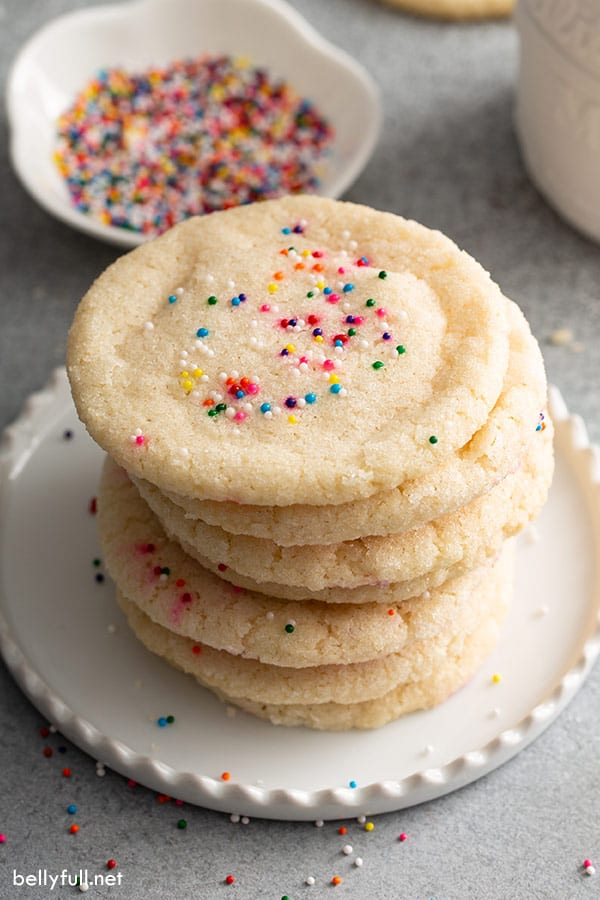

The Best Sugar Cookie

Easy Sugar Cookie Recipe {only 3 ingredients!}
.
Quick and easy sugar cookies made with only 3 pantry ingredients and no egg!
So simple and foolproof, you can whip up this sugar cookie recipe anytime.
Sweet, buttery, and delicious!
Ingredients
- 1 cup unsalted butter , room temperature
- 2/3 cup + 3 tablespoons granulated sugar , divided
- 2 cups + 1 tablespoon all-purpose flour , spooned and leveled
Steps
- Preheat oven to 325 degrees F. Line 2 large baking sheets with parchment paper.
- In a medium bowl, using a handheld electric mixer,
beat together butter and 2/3 cup sugar until combined. (It will be a little gritty that's ok.)
- Add in flour and blend well (then blend in the vanilla, if using.)
- Using a cookie scoop, roll the dough into 1-inch balls.
- Gently roll the balls in the remaining 3 tablespoons of sugar until lightly coated; transfer to the baking sheets 2 inches apart.
- With the bottom of a measuring cup or glass,
press down on the balls to flatten. Sprinkle with some
nonpareils (if using) and lightly press down again just so they stick.
(The dough should end up being between an 1/8-1/4 inch thick, so 3/16 to be exact.
They will look pretty small in circumference, but they will spread a bit to a normal
size cookie.)
- Bake for 14-16 minutes or until just slightly golden around the edges and on the bottom.
- Remove form the oven and let rest on the baking sheets for at least 10-15 minutes (don't skip this step!) Then eat or transfer to a cooling rack to cool completely.
- Enjoy!
Home